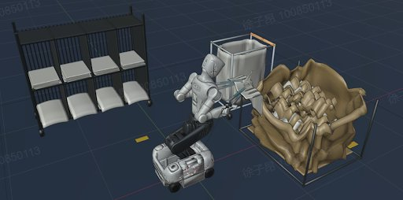

固定位置机械臂实拍图
点击或拖入本地实拍图
点击替换照片
早期
固定位置机械臂
单工位，换线要重新部署
单工位，换线要重新部署

跨工位移动，一台覆盖多个岗位

直接进入为人设计的产线

大模型规划，验证后冻结为程序
直接走冻结程序，不再问大模型
| 本体形态 | 轮式底盘 + 双臂 |
| 移动方式 | 轮式 |
| 适用场景 | 工位间上下料、分拣 |
| 软件框架 | 自研 Harness |
| 负载 / 续航 | 待补 |